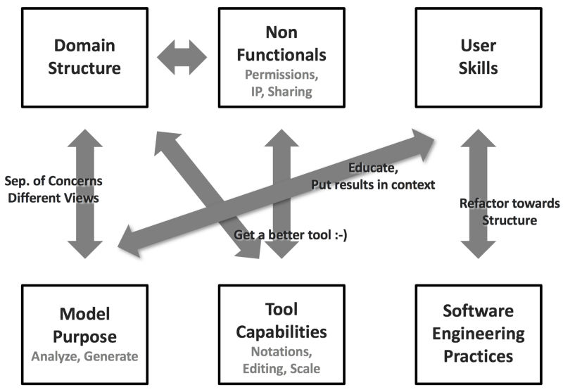
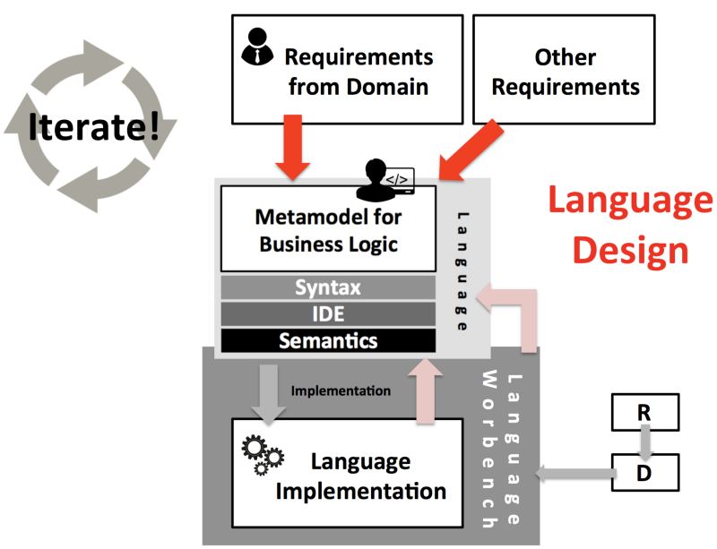

There is more to good language design than the abstractions inspired by the domain, including software engineering best practices, tool considerations, and style!
DSL language is used by people who are not programmers, but who are professionals in their domain. I identified domain abstractions and suitable notations as important ingredients, but also emphasised IDEs, simulators and test support.
The project will be targeting to UX designers and especially those who are specialised in the user journey mapping and in blueprint design. I identified domain abstractions and suitable notations as important ingredients, but also emphasised IDEs, simulators and test support.
Model Purpose
The purpose of a model (and thus, the language for creating it) can vary. A model might be used to describe a system, usually for documentation and communication purposes. In the context of DSLs and more generally, model-driven development, we usually intend models to be prescriptive, which means that they govern how the derived system is structured and how it behaves. Prescriptive models have a closer connection to the real system — in a sense, they are the system. Models that are built purely for documentation and communication are outside my scope.
So if the purpose of a model is to be analysed in order for us to be able to make predictions about a system’s behavior (e.g., model checking for state machines) or if we want to generate/synthesize the system itself, then the models must contain all the relevant information needed by the analysis or the generator. This does not mean that a model has to be as detailed as the system, but it has to contain all the relevant information.
My point here: some of this information in the model might not be relevant (or at least, motivated by) the domain and its stakeholders. This information might even confuse your domain users. But it is still necessary for the model to fulfil its purpose. It is usually a good idea to move this information into a separate viewpoint model (a model that relates to the core domain model, but is viewed and edited separately). If your tool supports it, you can also embed the information in the core domain AST and then only show those parts to the domain expert which he cares about. MPS’ conditional editors can be used nicely for this purpose.
The classical example is data modelling. The core domain model, developed and maintained by domain experts, describes data relevant to the domain. A separate viewpoint model, maintained by technical people, defines the mapping of the data model to a relational database (with table names, database data types and keys). This information is crucial to be able to generate a data access layer, but the domain people do not care.
I guess what I am suggesting here is to think consciously about concerns and their possible separation.
Non-Functional Considerations of the Modeling Tool
All tools have limits in terms of scalability. Language workbenches are no different. Depending on the particular tool, there might be limits to the size of a particular “file” in an editor, to the size of the overall model in the context of type checking or other analyses, or to the size of units with regards to transformation.
So why do these things influence language design as opposed to just the size of the overall model? Consider a language for describing Business Components. A Business Component (BC) groups services, data items and processes. It doesn’t really matter what those are, but let’s assume there are many of them. And let’s further assume that a BC owns them, in the sense of composition (solid diamond in UML). If you now implement this design in MPS or Xtext, you have a problem: ownership always entails syntactic nesting. So all of the stuff owned by one BC must be in the same file (or root node, in the case of MPS). If you now have a performance problem with editors that contain too much stuff, a BC will easily become too large for the editor to run smoothly. You have to split one BC into several files for the editor performance to be acceptable. But if the BC owns its contents, you cannot technically do this. You have to change the design of your language (and then of course, the implementation as well). For example, you can do it like Java where you make services, data items and processes the files/roots, each of them declaring the BC they belong to (like Java does with its package declaration at the top of files). Or you allow Includes in BCs, which reference (as opposed to own) additional services, data or processes.
An example in the context of (type) checking is global uniqueness checks, for example, for names. This is expensive, because the analysis might have to traverse the whole model (some tools, for some names, maintain a global index that can be queried efficiently). Instead of implementing this as a validation rule that is executed in realtime, you might want to consider realising it as a model assessment, i.e., a kind of report that runs on demand, maybe only on the build server, where performance doesn’t matter as much. Or you might want to introduce a hierarchy (a language design change!) where names are scoped by the container. In this case you only have to check uniqueness inside the container, a much smaller scope. The top level containers still have to be checked globally, but one assumes that there are few(er) of them than in a flat world.
Introducing a hierarchy also helps with verification, which is a notorious performance bottleneck. For example, it is hopeless to check a complete (non-trivially sized) program, in one go, with an SMT solver. The problem can be addressed through hierarchical checking, where each hierarchical unit declares its contract (e.g., pre- and postconditions).
Summing up, while one might argue that the non-functional considerations of tools should not influence language design, they do. So embrace them and do it consciously.
Tool Capabilities, more Generally
The performance limitations discussed in the previous paragraph are an example of a limitation in tool capabilities. But this is a more general problem. I know tool vendors of purely graphical modelling tools who suggest to model expressions (such as guards in state machines) as graphical trees. Sure, it’s possible, but it sucks! Back in the very early days of Xtext, where it’s grammar language could not sensibly express expression, we all argued that DSLs should be “declarative” — meaning, they should not contain “complicated expressions”. While this is good advice for some DSLs, many very useful ones rely heavily on expressions. The argument back in the day was driven more by a tool limitation than by language design considerations. Table-based notations are not used widely in DSLs because many language workbenches, in particular, the parser-based ones) don’t support tables (Tijs once showed me a table in a text editor, that was an interesting exception).
So tool capabilities very much influence the design of your language, often in a limiting way. What can you do about it? First, be conscious of it. And then select the appropriate tool for a particular problem.
By the way: this is one of the reasons why I love MPS. It supports a wide range of notations out of the box (or through the mbeddr.platform). It is also extensible to support completely custom notations; we’ve built the weirdest notations for customers! I’m not suggesting MPS is suitable for every scenario, but it can credibly support a wide range of them.
Software Engineering Practices and User Skills
Copying a whole 100-page insurance plan (defined formally or not) and then making a few changes in select places in order to define a new version (because the law changes) or a variant (for a particular region) is not a good idea: it introduces lots of duplication in those parts that are identical. Writing a 10-page decision procedure as one big cascade of (what is a domain-specific equivalent of) if statements is unmaintainable. Expressing state-based behaviors with state-establishing Boolean expressions and repeating them all over the place to express behavior over time is a hugely error-prone, especially if you do this for 25 pages of A4 paper!
I have seen all these examples in the real world. Why do people do this?
The immediate answer may be that the language they use does not allow the users to use better abstractions. But that just leads to the question why, assuming it’s a DSL, the DSL does not provide better abstractions. Again, one obvious answer is that the guy who built the language was incompetent and just built an inadequate language. That’s quite possible. But often the phenomenon hints at a deeper problem.
Domain users are usually readily able to understand the core abstractions of their domain. If the DSL represents those well, then there is usually not a big effort involved in learning the language, especially if the language comes with decent IDE support. But software engineering practices such as modularity, encapsulation, specialisation or contracts are unintuitive.
Let’s return to the introductory examples. We could use an OO-class-inheritance-style relationship between insurance plans, where a new version of a plan “overrides” things from the base plan, thus explicitly describing the difference. The big decision procedure can be broken down into function-like thingies. And the state-based behavior should be expressed with a domain-specific construct that has the semantics of a state machine.
So what can we do? One thing is education and training. Notice that I mention both. It is not enough to train users what to do with the tool. You also have to educate them with regards to the underlying ideas and the rationales behind them. It does not help if your tool supports functions, but people then still pack everything into a single humongous function!
People who have no education in computer science usually are not familiar with things like modularity, encapsulation, specialisation or contracts. IMHO this is a huge problem in today’s curricula. I don’t want everybody to become programmers. But in our software-dominated world, professionals in every domain must be versed, to some degree, in computational thinking in order for them to be competent users of the software systems they are required to work with.
The other way to address this issue is tool support. For example, the state-machines can be simulated to allow users to interactively learn what they are all about. A graphical call graph can help understand interrelated functions. And a view of an insurance plan that inlines the inherited stuff, in grey, read-only, helps understand the semantics of inheritance. Maybe you can even make it so that if you change one of the inherited, grey parts, the tool automatically creates an overriding thingy in the sub-plan (copy-on-write).
To make a long story short, finding the right balance between building DSLs that are good in terms of software engineering practices, and the (reluctance-driven) expectations of (some of the) users can be a major challenge and requires iteration and patience.
A quick soapbox: selling an approach that requires education is a steep challenge these days. We are all spoiled by consumer software:
If Google can make the whole world accessible through one text box, why do we have to learn all this complicated crap?
However, in my opinion there is no free lunch. The complexity we want to build into today’s software requires both effective tools (such as DSLs), but also competent users. Training and education is required to make progress.
Style
A way to build a taste is to know a wide range of languages — both programming languages and DSLs (this has the added benefit that you don’t have to invent your own semantics!). So read books and papers, this really helps!
Beyond that, an awareness of style, or a taste, comes with experience.
Wrap Up
This post, plus the previously mentioned earlier one, now lets us define what language design is all about:
The abstractions that relate a DSL to a domain and the associated notations are key to successful DSL design. At least to get initial buy-in from the users. But the concerns discussed in this paper make a DSL viable for the long run. Make sure you balance the two. The actual implementation of the language in a language workbench is not language design per se, but there is of course an influence, both in terms of the capabilities of the language workbench used for the implementation, but also in terms of the implementation effort or complexity of a particular design decision.
Markus Voelter, Independent Consultant at voelter - February 2019